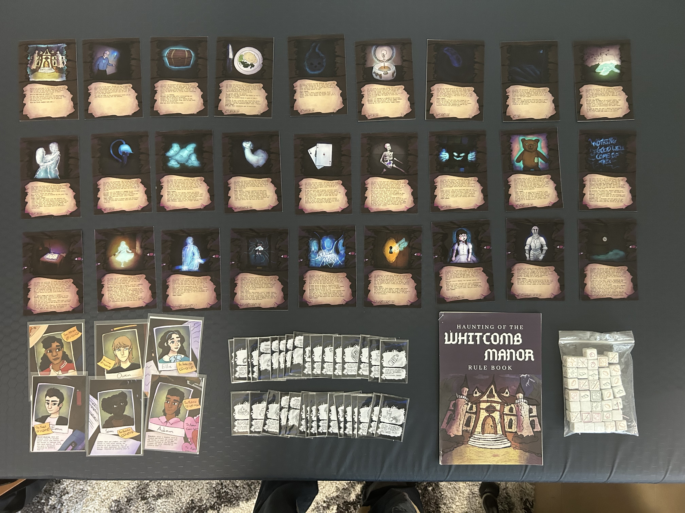

Advanced Game Design — Role Playing Game
Haunting of the Whitcomb Manor
Team: Ari, Dante, Elisa, Sam | Format: GM-less cooperative horror RPG | Players: 4
Narrative Design Game Mechanics Game Design Visual Design

Haunting of the Whitcomb Manor is a GM-less cooperative horror RPG for four players, built on the structural foundation of Escape the Dark Castle. Players are teenagers who decide to explore the abandoned manor on the edge of town — filled with chapter cards, enemies, and things that test their resolve. The object is to survive with everyone alive and sane. If anyone runs away or loses their mind, the haunting wins.
The Premise
The manor is structured across three acts of increasing difficulty — each act sealed with a boss encounter before the next opens. Players work together to turn chapter cards, read the italic story text aloud, and navigate the supernatural through dice rolls, item management, and collective decision-making. There is no game master: the group decides everything together.
Key Design Systems
Each character is built around three stats and a special ability. Custom character dice show those stat symbols — so the character you pick shapes which dice faces you roll with throughout the game.
Willpower (starts at 15) represents physical stamina and will to continue. Sanity (starts at 12) represents mental fortitude against the manor's supernatural horrors. Both can be lost. Neither can be recovered past their starting value.
There is no prescribed turn order. The group decides together who turns the next chapter card — a design choice that makes every encounter feel like a shared negotiation. Some consequences only fall on the player who turned the card, which makes the decision genuinely tense.
Enemies are represented by a row of chapter dice placed beneath their card. Players simultaneously roll their character dice and try to match the enemy's dice symbols to remove them. Doublets and quadruplets require multiple players to coordinate — making group strategy essential.
Each character can carry exactly two items — one in each hand. Items are drawn face-up for the group to see, distributed collectively, and tradeable only between chapters. The two-item limit forces real prioritization at every step.
Each chapter card opens with italic text read aloud to set the scene. Players are encouraged to roleplay their characters. The rulebook itself reads: "Don't skip the italic text. This game is all about atmosphere and storytelling."
The Standout Mechanic — Sanity
The Sanity system is the heart of the game's design tension. Losing Sanity is bad — hit zero and you lose. But the three Sanity tiers correspond to three progressively stronger character dice, meaning the more unhinged your character becomes, the more powerful their rolls. At the second tier, characters unlock their special ability permanently.
This creates a genuine risk/reward loop: players can voluntarily sacrifice 1 Sanity at any time to reroll their die, trading mental health for a second chance. The closer to the edge, the stronger the tools — but also the closer to catastrophic loss. That tension informed every combat and chapter design decision across the game.
My Contributions
Working in a four-person team, I led three areas of the project:
- Narrative Design — wrote the chapter card story text, the premise, and the voice of the rulebook. The tone needed to land somewhere between campfire ghost story and genuine dread without becoming self-parody.
- Game Mechanics — designed the Sanity tiering system and its interaction with character dice, the collective turn-order structure, and the resting mechanic (players can hang back from combat to recover 1 Willpower per round).
- Game Design & Production — designed the rulebook layout in Adobe Illustrator, hand-illustrated game components, and fabricated physical cards and dice with the Harvey Mudd Makerspace and Scripps Fab Lab.
Physical Production
Haunting of the Whitcomb Manor was produced as a high-quality physical game. The rulebook was designed and printed as a full booklet — complete with the hand-illustrated manor cover, hand-drawn item and enemy art throughout, and Gothic typography. Chapter cards, character cards, and item cards were all printed and finished by hand using the Harvey Mudd Makerspace and Scripps Fab Lab. Custom character dice and chapter dice were fabricated to match the stat iconography. Playtested across multiple sessions with positive feedback.
Skills & Tools
- Adobe Illustrator — rulebook layout, card templates, iconography (Brawns, Brains, Charm, Slash, Teeth, Shield symbols)
- Adobe Photoshop — cover illustration compositing and visual asset production
- Hand illustration — all in-rulebook art (manor cover, item sketches, enemy art) drawn by hand
- 3D Printing & Fabrication — custom dice and game pieces produced at the Harvey Mudd Makerspace and Scripps Fab Lab
- GM-less RPG systems design — building a game that generates narrative without a moderator, relying on emergent player decisions and card text
- Playtesting — iterating the Sanity tiers and combat difficulty across multiple playtests to balance tension against playability
Photos


